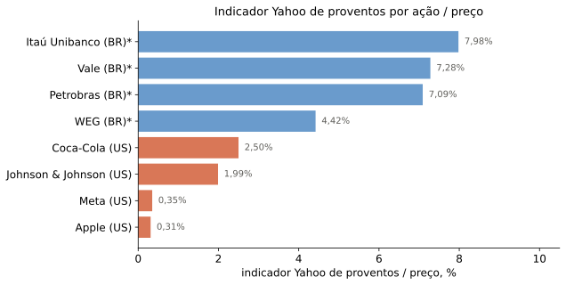
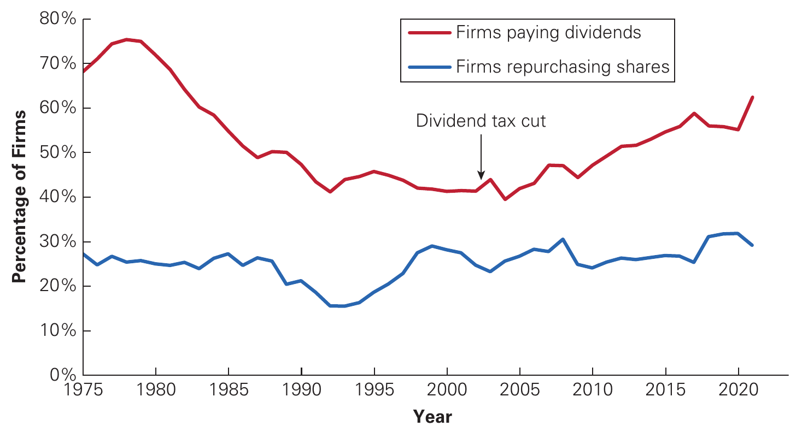
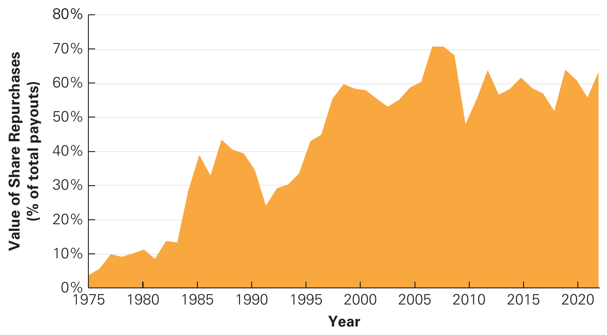
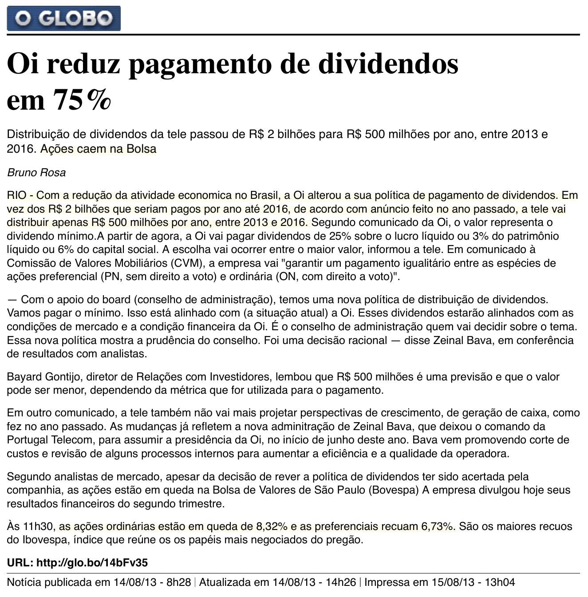
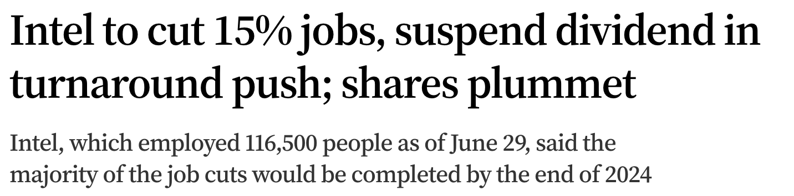

Dividendos, recompras, JSCP: a forma de devolver caixa ao acionista muda o valor da firma?
Firmas podem transferir recursos aos acionistas por três vias:
Perguntas centrais: quanto é pago? quando, com que frequência? como? qual é a política ótima?

Fonte: Yahoo Finance, 2026-07-27. *Empresas brasileiras: proventos incluem JSCP. O indicador da WEG inclui dividendo extraordinário.
Fama e French (JFE, 2001), CRSP: a fração de firmas pagantes cai do fim dos anos 1970 a 1999, por composição (entram firmas de crescimento) e por menor propensão a pagar (disappearing dividends).

Fonte: Berk e DeMarzo (2024), Fig. 17.4; Compustat. A fração que paga dividendo cai até os anos 2000 e se recupera após o corte de imposto de 2003.
Grullon e Michaely (JF, 2002), Compustat 1972–2000: o payout total como fração dos lucros muda pouco, mas a recompra substitui o dividendo na composição.

Fonte: Berk e DeMarzo (2024), Fig. 17.5; Compustat. Desde o fim dos anos 1990, recompras são cerca de 60% do payout e caem nas recessões.
Alíquotas federais máximas sobre ganho de capital e dividendos:
| Período | Ganho de capital | Dividendos |
|---|---|---|
| 1971–1978 | 35% | 70% |
| 1979–1981 | 28% | 70% |
| 1982–1986 | 20% | 50% |
| 1987 | 28% | 39% |
| 1988–1990 | 28% | 28% |
| 1991–1992 | 28% | 31% |
| 1993–1996 | 28% | 40% |
| 1997–2000 | 20% | 40% |
| 2001–2002 | 20% | 39% |
| 2003–2012 | 15% | 15% |
| 2013–2026 | 20% + 3,8%* | 20% + 3,8%* |
Fonte: Berk e DeMarzo (2024), Tab. 17.2; IRS (2026). Ativos mantidos por mais de um ano. *Adicional sobre renda de investimento, acima de US$ 200 mil por ano (US$ 250 mil para casais). Com alíquotas iguais desde 2003, a vantagem da recompra está em adiar o imposto.
Alíquotas máximas sobre o acionista pessoa física, ações em bolsa:
| País | Dividendos | Ganho de capital |
|---|---|---|
| Reino Unido | 39,4% | 24% |
| França | 31,4% | 31,4% |
| Índia | 30%* | 12,5% |
| Alemanha | 26,4% | 26,4% |
| EUA | 23,8% | 23,8% |
| Japão | 20,3% | 20,3% |
| Brasil | 10% | 15% |
| Singapura | 0% | 0% |
Em geral, o dividendo paga tanto ou mais que o ganho de capital. No Brasil, paga menos.
Fonte: PwC, Worldwide Tax Summaries (2026); IRS (2026); Lei 15.270/2025; Lei 11.033/2004. Não inclui o imposto da firma. *Antes de sobretaxas.
| Até 2025 | Desde 2026 | |
|---|---|---|
| Dividendo | Isento | 10% na fonte, acima de R$ 50 mil/mês da mesma empresa |
| JSCP | 15% na fonte | 17,5% na fonte |
| Ganho de capital em bolsa | 15%; isento se vendas ≤ R$ 20 mil/mês | Igual |
| Imposto mínimo | Não havia | Até 10%, para renda acima de R$ 600 mil/ano |
Fonte: Lei 15.270/2025; Lei Complementar 224/2025; Lei 11.033/2004.
Argumento: imagine duas firmas com ativos idênticos.
Três políticas para o caixa de hoje:
M-M garante equivalência entre as três.
| Antes | Política 1 | Política 2 | Política 3 | |
|---|---|---|---|---|
| Caixa pago pela firma (R$ mi) | — | 10 | 12 | 10 |
| Ações novas (+) ou recompradas (−) | — | 0 | +20.408 | −90.909 |
| Ações em circulação | 1.000.000 | 1.000.000 | 1.020.408 | 909.091 |
| Valor da firma (R$ mi) | 110 | 100 | 100 | 100 |
| Preço por ação = valor ÷ ações | R$110,00 | R$100,00 | R$98,00 | R$110,00 |
| Caixa por ação original (quem não vende) | R$0,00 | R$10,00 | R$12,00 | R$0,00 |
| Riqueza por ação original | R$110,00 | R$110,00 | R$110,00 | R$110,00 |
| Dividendos | Recompra de ações | |
|---|---|---|
| Como o caixa é distribuído | Pagamento por ação, a todos os acionistas | Ações compradas de alguns acionistas |
| Participação | Involuntária (quem tem ação, recebe) | Voluntária (acionista escolhe vender ou não) |
| Tributação (investidor comum) | Geralmente como renda ordinária, mas a 20% desde 2013 | Como ganho de capital, a 20% desde 2013 |
| Efeito sobre o preço | Cai exatamente o valor do dividendo | Inalterado, se recomprado a preço justo |
Fonte: adaptado de Berk e DeMarzo, edição anterior, Tab. 17.3. Tributação dos EUA.
O argumento: dividendo hoje é certo; ganho de capital futuro é arriscado. Logo, investidores pagariam um prêmio por firmas que pagam mais dividendo.
Na Acme: o acionista recebe R$10 e a ação cai de R$110 para R$100.
\[\left(P_{cum}-P_{ex}\right)\left(1-\tau_{g}\right)=D\left(1-\tau_{D}\right)\]
Comparando quatro estratégias em torno da data ex — a álgebra completa fica para o quadro:
Para nenhuma estratégia gerar ganho de arbitragem, todas devem coincidir — o que dá exatamente a condição da tela anterior.
Manipulando a condição de não arbitragem:
\[P_{cum}-P_{ex}=D\frac{\left(1-\tau_{D}\right)}{\left(1-\tau_{g}\right)}=D\left(1-\underset{=:\ \tau_{D}^{*}}{\underbrace{\frac{\tau_{D}-\tau_{g}}{1-\tau_{g}}}}\right)\]
\(\tau_D^*\) é o tributo equivalente: mede o quanto o dividendo é desfavorecido frente ao ganho de capital.
Brasil, acima de R$ 50 mil/mês: \(\tau_D=10\%\) e \(\tau_g=15\%\) dão \(\tau_D^*\approx-5{,}9\%\). O dividendo é favorecido.
Se a lógica de Lintner (ou substituta) vale, o nível de dividendos pode carregar informação:
Hipótese da sinalização: ajuda a explicar reações de preço a anúncios de mudança de dividendo.

O Globo, 14/08/2013 (Bruno Rosa). Cotação intradiária, no dia do balanço do 2º trimestre.

Reuters, reproduzida no South China Morning Post, 02/08/2024; fechamento: Reuters.
Política de dividendos e política de incentivos aos agentes interagem.
De volta ao risco moral com informação privada e benefício \(B\) (Aula 14).
Fonte: Tirole (2006), cap. 6, ap. 7.
| Data 0 | Data 1 | Data 2 |
|---|---|---|
| Empreendedor tem caixa próprio \(A\), capta \(I-A\). Contrato. | \(r\) acumula (determinístico). Empreendedor aprende, privadamente, seu tipo \(i\in\{G,B\}\). Dividendo \(d\) é pago; \(r-d\) é reinvestido. Depois, risco moral: esforço (\(p=p_H\) ou \(p_L\)). | Lucro \(R\) com probabilidade \(p+\tau_i(r-d)\); \(0\) caso contrário. |
Fonte: adaptado de Tirole (2006), Fig. 6.2.
H1 (investimento produtivo): \(\tau_i'>0,\ \forall i\)
H2 (\(G\) é boa notícia, em média): \(\tau_G(J)>\tau_B(J),\ \forall J\in[0,r]\)
H3 (na margem, \(G\) é menos produtivo; reinvestir só é eficiente para \(B\)):
\[\left[\tau_{B}(r)-\tau_{B}(0)\right]R>r>\left[\tau_{G}(r)-\tau_{G}(0)\right]R\]
| Sem reinvestir: \(\tau_i(0)\) | Reinvestindo: \(\tau_i(r)\) | Ganho de reinvestir 10 | |
|---|---|---|---|
| Tipo \(G\) | 0,20 | 0,25 | 5 |
| Tipo \(B\) | 0 | 0,20 | 20 |
Quadrado: decisão do gestor. Tracejado: natureza (sucesso paga 100, fracasso paga 0). Esforço alto em todos os ramos. O gestor tem 20% das ações.
O gestor tem 20% das ações: leva 20% do dividendo e 20% do lucro final.
Candidato a solução: \(d=r\) (paga tudo) para tipo \(G\); \(d=0\) (reinveste tudo) para tipo \(B\); esforço alto para ambos.
\[\alpha\left[r+\left(p_{H}+\tau_{G}(0)\right)R\right]+(1-\alpha)\left[p_{H}+\tau_{B}(r)\right]R\]
O retorno do empreendedor em caso de sucesso depende apenas de variáveis observáveis. IC para esforço:
Após dividendo \(d=0\) (equilíbrio, tipo \(B\)): \(\quad R_{e}^{d=0}\geq\dfrac{B}{\Delta p}\)
A restrição destacada (IC de esforço do tipo \(B\)) é uma das duas que binds — usada adiante na renda penhorável.
Para que o tipo \(G\) prefira pagar dividendo a reinvestir:
\[r_{e}^{d=r}+\left[p_{H}+\tau_{G}(0)\right]R_{e}^{d=r}\geq\left[p_{H}+\tau_{G}(r)\right]R_{e}^{d=0}\]
Para que o tipo \(B\) prefira reinvestir a se passar por \(G\):
\[\left[p_{H}+\tau_{B}(r)\right]R_{e}^{d=0}\geq r_{e}^{d=r}+\left[p_{H}+\tau_{B}(0)\right]R_{e}^{d=r}\]
A segunda restrição (tipo \(B\) mimetizar \(G\)) fica folgada na determinação da renda penhorável; os desvios duplos ficam satisfeitos, implicados pelas outras. A restrição destacada acima — tipo \(G\) não desviar para reinvestir — é a outra que binds.
Com separação, o pagamento ao investidor externo é
\[\alpha\left[(r-r_{e}^{d=r})+(p_{H}+\tau_{G}(0))(R-R_{e}^{d=r})\right]+(1-\alpha)\left[p_{H}+\tau_{B}(r)\right](R-R_{e}^{d=0})\]
As duas restrições destacadas (caixas dos slides anteriores) binding — não duas ICs de esforço:
Substituindo as duas na expressão acima:
\[P^{*}=\alpha\left[r+\left[p_{H}+\tau_{G}(0)\right]R-\left[p_{H}+\tau_{G}(r)\right]\frac{B}{\Delta p}\right]+(1-\alpha)\left[p_{H}+\tau_{B}(r)\right]\left(R-\frac{B}{\Delta p}\right)\]
No exemplo: com o gestor tendo 20% de tudo, os investidores ficam com 60. Cortar a fatia dele no dividendo para 10% mantém os incentivos e sobe para 60,5.
Implementação: o gestor recebe a fração \(s_1\) do dividendo e a fração \(s_2\) do lucro final (ver livro-texto). Com \(s_1=s_2\), é um acionista que não vende.
Valor da firma (ação) em \(t=0\):
\[V_{0}=\alpha\left[r+\left(p_{H}+\tau_{G}(0)\right)R\right]+(1-\alpha)\left[p_{H}+\tau_{B}(r)\right]R\]
Após o anúncio de dividendos (\(d=r\), revela tipo \(G\)):
\[V_{1}^{d=r}=r+\left[p_{H}+\tau_{G}(0)\right]R\]
\[V_{1}^{d=r}-V_{0}=(1-\alpha)\left[r-\left[\tau_{B}(r)-\tau_{G}(0)\right]R\right]\]
Das hipóteses H2+H3, \(\ r>\left[\tau_{B}(r)-\tau_{G}(0)\right]R\), logo:
\[V_{1}^{d=r}>V_{0}\]
Dividendos são, em média, notícia positiva sobre o produto esperado da firma — o ganho da revelação supera o custo de abrir mão do reinvestimento na margem.
O dividendo revela o tipo \(G\). Isso diz duas coisas ao mercado:
No exemplo: o preço vai de 75 a 80 com dividendo e a 70 sem.
Sob H2–H3 o anúncio é sempre boa notícia. O caso negativo é outro ambiente: o mercado já conhece os ativos existentes e só não sabe se há bons projetos novos (Tirole, 2006).